Field Guide · 2 Days in the City + a Van North
A routed two-day walk through the city, grouped so you never double back, then the northbound leg in the rental van — up the Marin coast and on into the redwoods.
Leg 01 · Day 1
The bridge and the Presidio down through the Victorians to the Haight, north to south.
The first three stops all sit inside the Presidio and link up beautifully on two wheels. Rent at Sports Basement Presidio — it's right on the Crissy Field path and the closest shop to the bridge — then ride to Tunnel Tops and the Yoda Fountain and out across the bridge toward Sausalito. The rental cost even comes back as store credit. Sports Basement Presidio ↗ · bridge-side rentals ↗
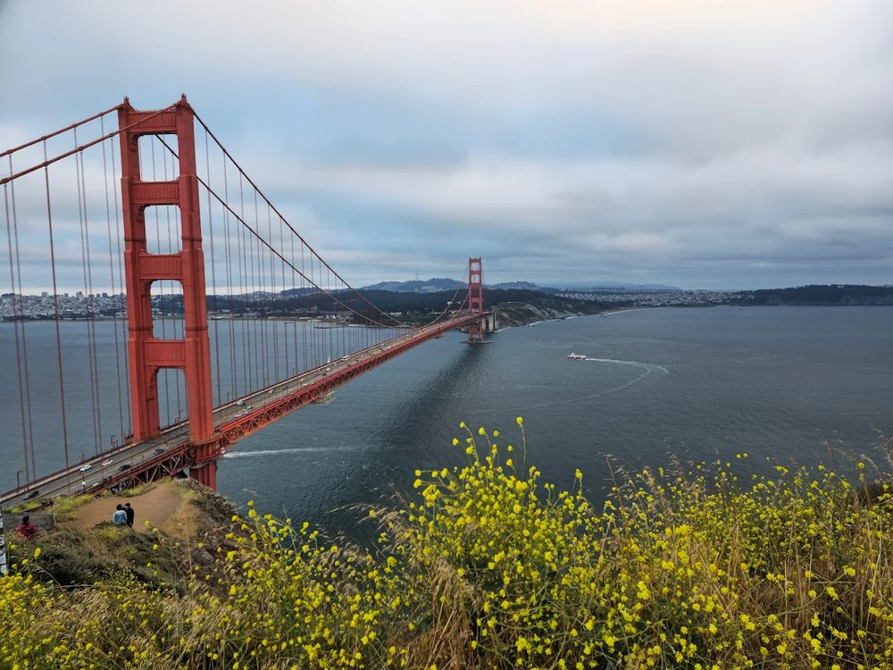
Start at the south-end welcome center for the postcard view, then walk out onto the bridge. Rideshare in — parking is scarce and break-ins are common. Better still, rent bikes nearby and ride across to Sausalito, then ferry back: the classic way to do the bridge.
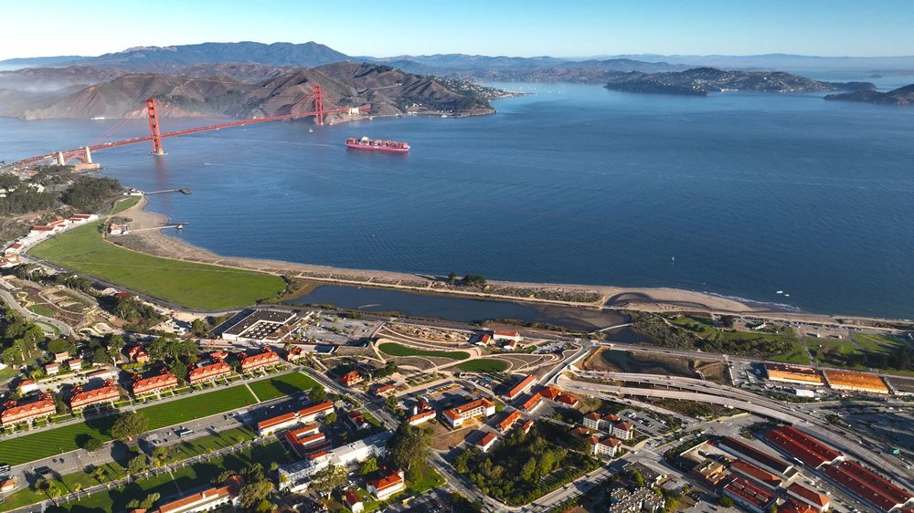
A park built over the freeway tunnels with sweeping bridge and bay views. Free, with a cafe and food trucks up top. The Presidio's best single viewpoint.
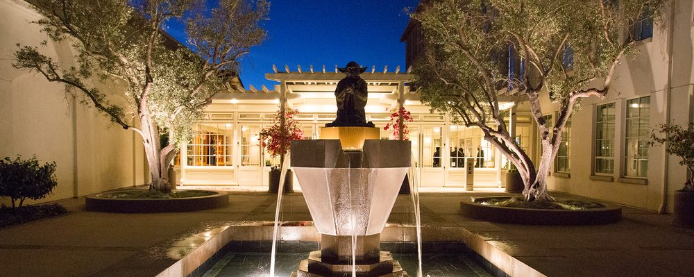
On the Lucasfilm campus. Step into the lobby behind the fountain for a life-size R2-D2 and the film awards. Photos OK, no video.
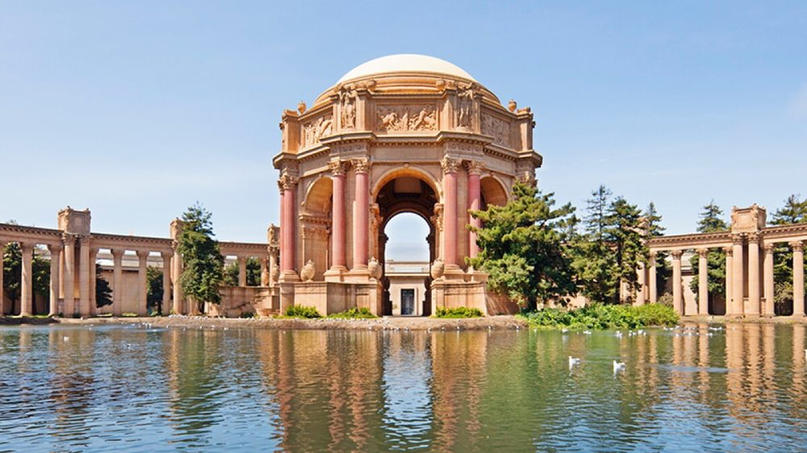
A Greco-Roman rotunda and lagoon left from the 1915 world's fair, five minutes from the Yoda Fountain. Walk behind the dome for the best angle.
Open in Maps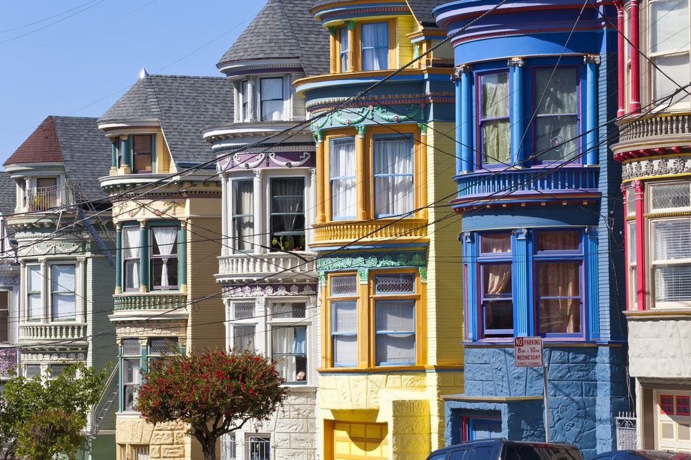
The "Full House" Victorian row. The postcard view is from up the hill in Alamo Square Park across the street — grab a coffee and sit on the grass.
Open in Maps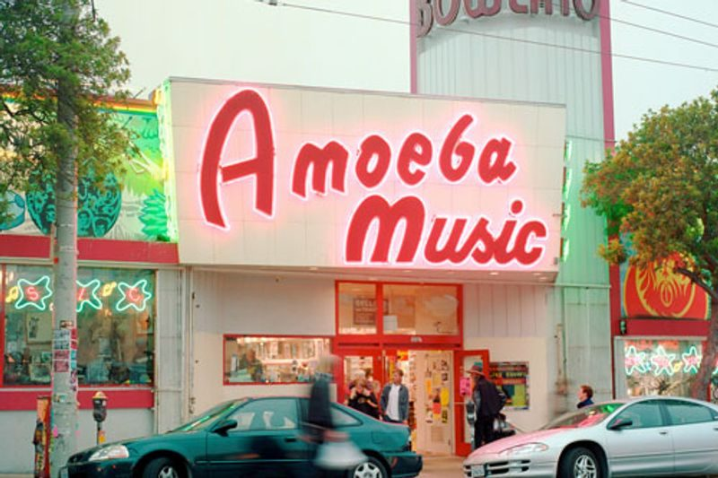
The 1960s counterculture epicenter, a short walk downhill from the Painted Ladies. Vintage shops, Amoeba Music, and the Grateful Dead house at 710 Ashbury. Late lunch and browse here.
Leg 02 · Day 2
The waterfront and Lombard Street through midday, then south to the Mission for dinner.
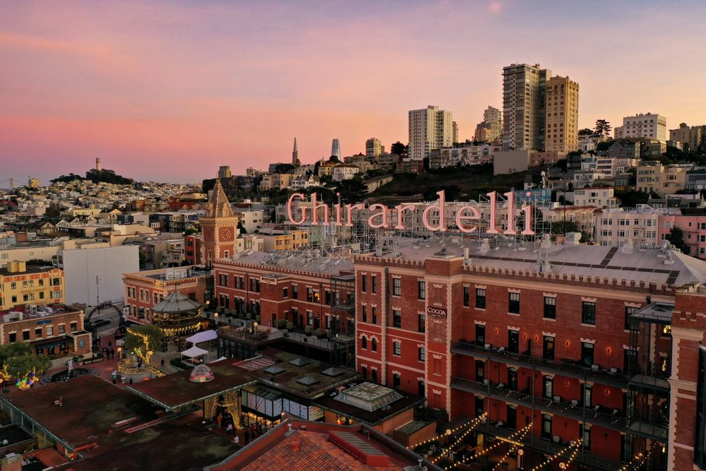
A former chocolate factory turned shops and eateries at the west end of the waterfront. Hot fudge sundae at the original parlor. By the Powell-Hyde cable car up to Lombard.
Open in Maps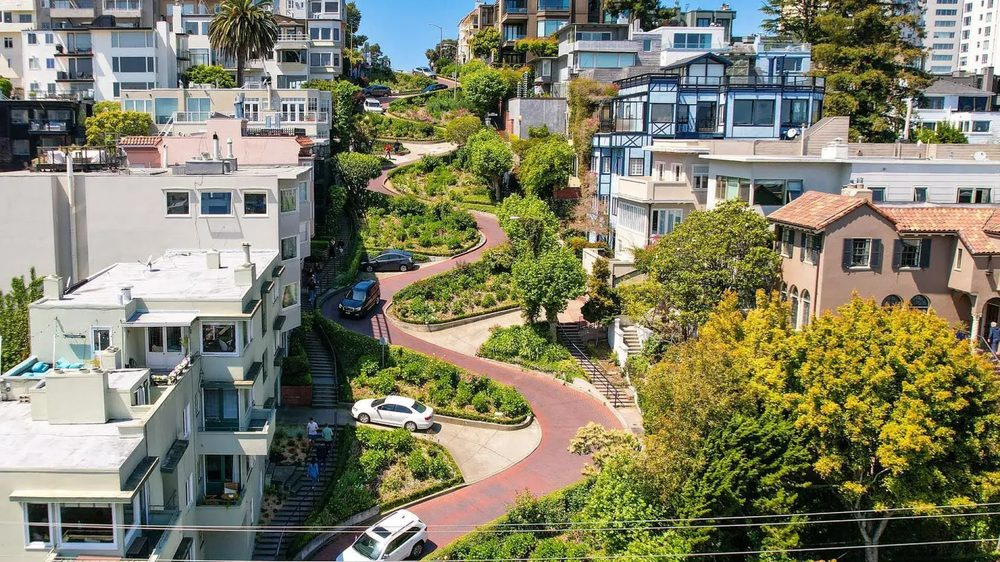
The famous crooked block — eight tight switchbacks down a steep, hydrangea-lined hillside. Walk the stairs on either side; driving it means a long queue.
Open in Maps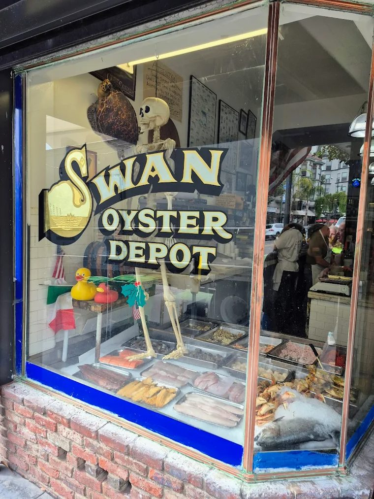
Optional · LunchSwan Oyster Depot — a century-old seafood counter on Polk Street, a short detour inland from Lombard. Eighteen stools, cash only, lunch until 2:30, closed Sundays. Go early, around 11, to beat the line before the kitchen closes. Open in Maps ↗
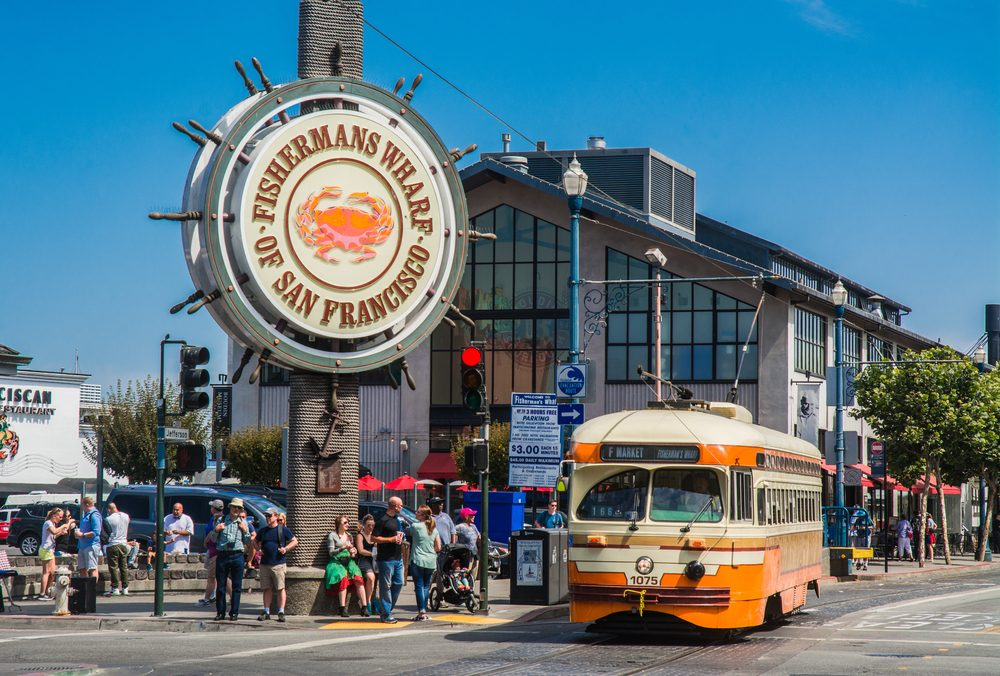
Back down to the water. Walk Hyde Street Pier for the historic ships and skip the chain spots on the main drag.
Open in Maps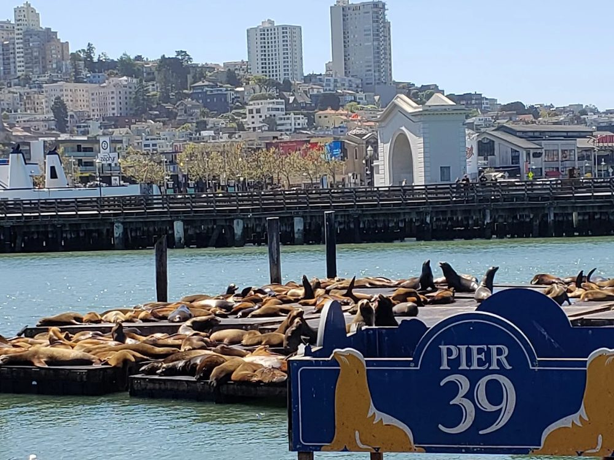
Five-minute walk from the Wharf. Head to the far end (K-Dock) for the free sea lions and the best Alcatraz views on the bay.
Open in Maps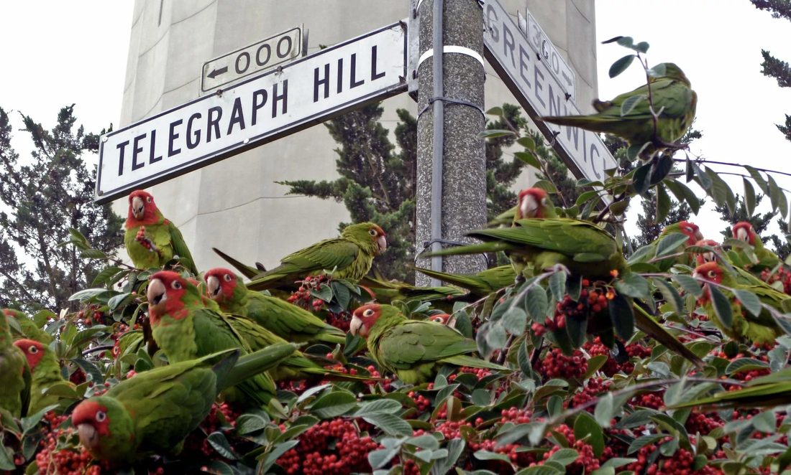
Look up · WildlifeThe wild parrots of Telegraph Hill — a feral flock of cherry-headed conures that took over the hill rising just behind the waterfront. Climb the Filbert or Greenwich Steps toward Coit Tower and you usually hear them before you see them, screeching through the trees. Open in Maps ↗
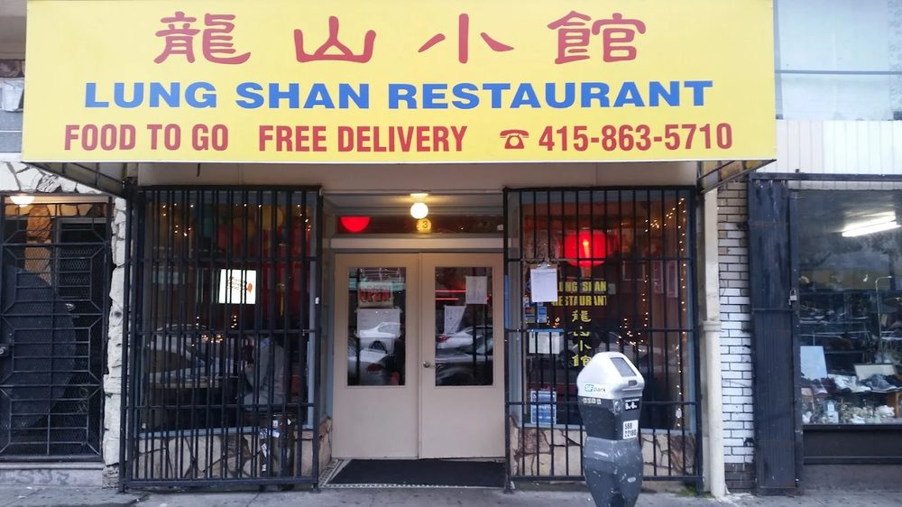
Szechuan-inflected and famously bold. Get the tingly mapo tofu and the Chongqing chicken wings. Open till 10, so the open afternoon gives you room before dinner. Look for the yellow Lung Shan Restaurant sign — Mission Chinese shares the space.
Open in Maps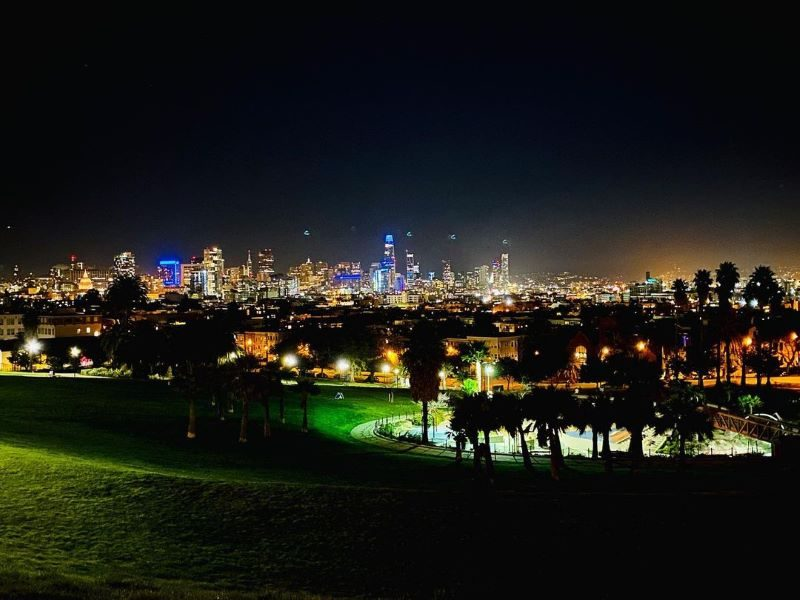
The city's living room — sloping lawns full of picnickers by day. From the upper terraces there's a clean view of the downtown skyline, best after dark when the towers light up. A short walk from dinner; open until 10.
Open in MapsSan Francisco's oldest neighborhood, grown up around Mission Dolores (1776), the oldest standing building in the city. For generations it has been the heart of the Latino and Chicano community, and that history is painted right on the walls — the murals of Balmy Alley and Clarion Alley, blocks of taquerias, and the Mission-style burrito that carried the name worldwide.
Leg 03 · The Van
Out of the city and up the coast, then the long push into the redwoods.
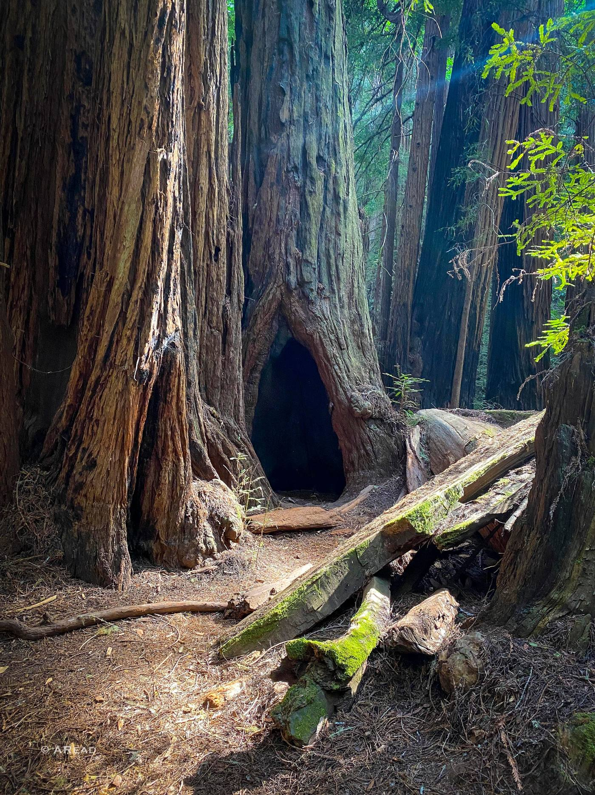
You don't have to drive 170 miles to stand under giant redwoods. Muir Woods is barely a fifteenth of the distance — just over the Golden Gate into Marin — and every bit as awe-inspiring, no $7.75-a-gallon fill-up required. And for raw coastline, Jenner — a small town up Highway 1 north of Muir Woods, where the Russian River meets the sea — is every bit as dramatic as Big Sur.
Day 3 · Marin Coast
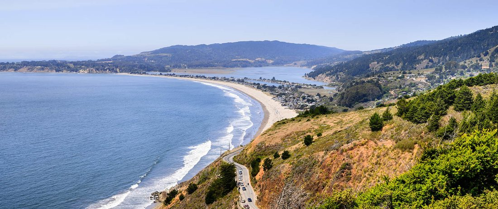
First stop out of the city. Cross the Golden Gate and take Highway 1 up the Marin coast — a winding hour over Mount Tam. A wide sandy beach for a walk and a breather; the Parkside Cafe in town is the classic lunch.
Open in MapsDay 4 · Redwood Country
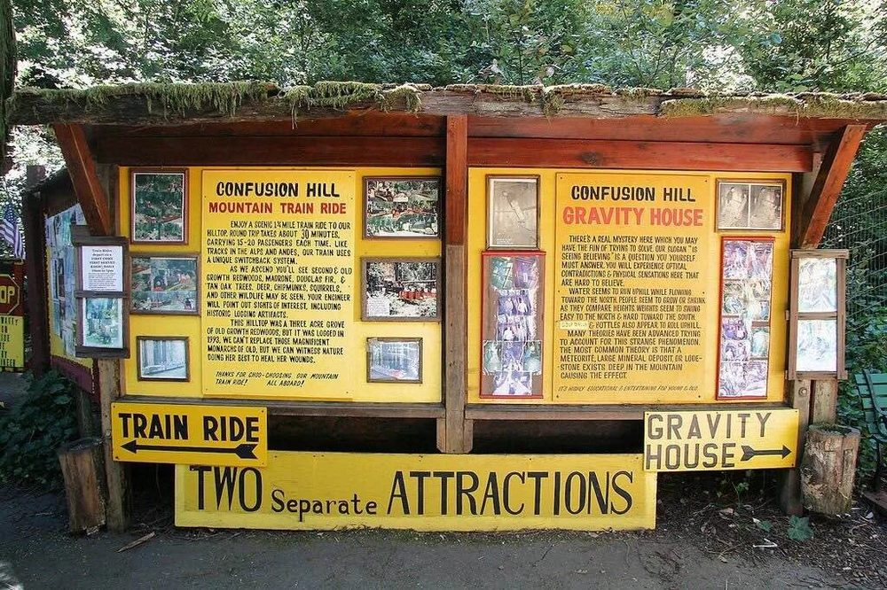
A 1949 roadside gravity house deep in redwood country, about 3.5 hours further north up 101. A tilted Gravity House, a mountain train ride, and the world's tallest freestanding redwood chainsaw carving. Open 10 to 5 daily; the train pauses in winter.
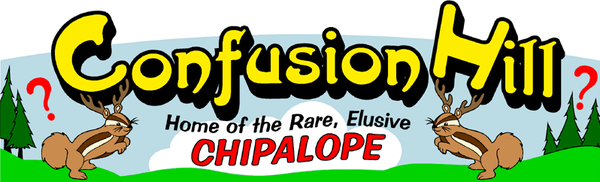
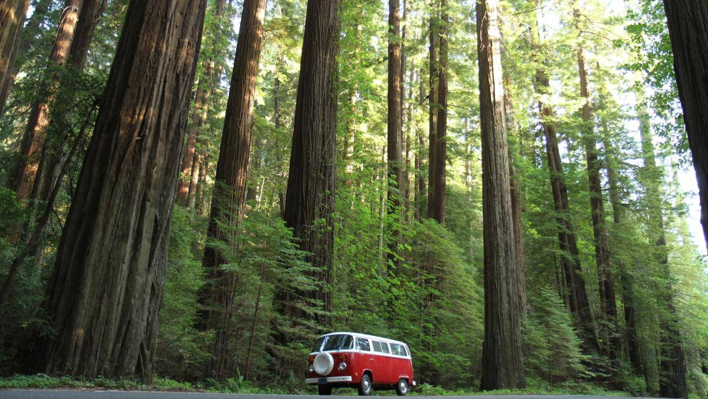
A 31-mile scenic parkway through Humboldt Redwoods State Park, running alongside US-101 — the old-growth highlight of the whole trip, and free. Pull off at Founders Grove or the Rockefeller Forest to walk among the tallest of the coast redwoods. Easy to fold into the drive right around Confusion Hill.
The Marin coast and the redwoods are about 170 miles apart, so make it two days, not one slog.
Fast way: cut inland to US-101 and run it north, roughly 3.5 hours.
Scenic way: stay on Highway 1 up through Point Reyes, Bodega Bay, and Mendocino. Highway 1 dead-ends into 101 right near Leggett, basically at Confusion Hill's doorstep. In a van with time to spend, this plus a night in Mendocino or Fort Bragg is the better trip.
Either way, detour onto the Avenue of the Giants just before Confusion Hill — the old-growth redwood parkway paralleling 101 is the highlight of that stretch, and it's free.